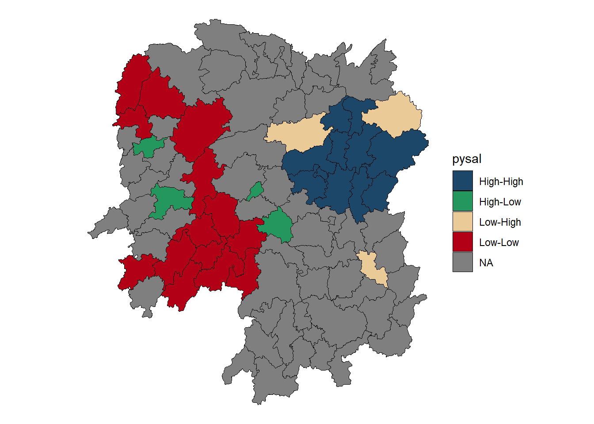
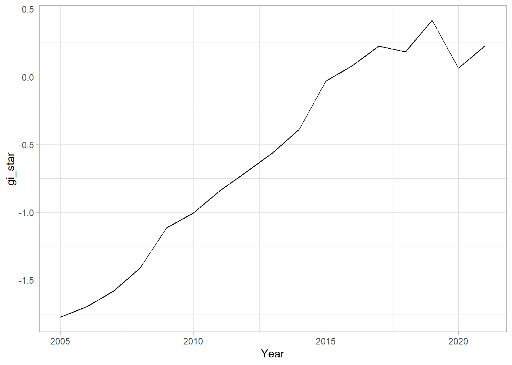

pacman::p_load(sf, sfdep, tmap, tidyverse, knitr, readxl)inclass_Ex02
Introduction to In Class Ex 02
Spatial Randomness
Spatial randomness assumption in geospatial analysis - assuming that it is randomly distributed across areas.
The assumption of spatial randomness states that the values of a variable at different locations in a spatial dataset are independent of each other, and there is no systematic spatial pattern or trend.
Key aspects of the spatial randomness assumption:
Independence of Observations: The assumption implies that the value of a variable at one location does not provide information about the values at neighboring locations. Each observation is considered to be independent of its spatial neighbors.
Homogeneity: The spatial randomness assumption assumes homogeneity or stationarity across the study area. This means that the statistical properties of the variable (mean, variance, etc.) do not vary systematically across space.
Random Spatial Distribution: There is no discernible pattern or structure in the spatial distribution of the variable. The distribution of values across space appears random and lacks systematic trends.
Isotropy: Isotropy refers to the idea that the spatial process is similar in all directions. In other words, the behavior of the variable is consistent regardless of the direction of measurement.
It’s important to note that the spatial randomness assumption may not hold in many real-world situations. Spatial autocorrelation, where values at nearby locations are correlated, is a violation of spatial randomness. Detecting and understanding spatial patterns and dependencies is a common goal in spatial analysis.
If spatial randomness is assumed, methods like global spatial autocorrelation tests (e.g., Moran’s I) and certain types of spatial regression models may be appropriate. However, when spatial patterns exist, additional spatial analysis techniques are needed to account for and model the spatial dependencies in the data.
Spatial Inequality
Spatial inequality refers to the unequal distribution of resources, opportunities, wealth, or development across different geographic areas. This form of inequality is characterized by disparities in economic, social, and environmental conditions between regions, cities, or neighborhoods. Spatial inequality can manifest in various ways and impact people’s quality of life, access to services, and overall well-being. Here are some key aspects of spatial inequality:
Economic Disparities:
- Income and Wealth: Spatial inequality often results in variations in income levels and wealth accumulation between different regions. Some areas may experience economic growth and prosperity, while others face economic decline and poverty.
Access to Services:
Education: Disparities in the quality of education and educational resources between regions can lead to differences in opportunities and outcomes for residents.
Healthcare: Unequal access to healthcare facilities and services can contribute to health disparities between spatial areas.
Infrastructure: Disparities in infrastructure development, such as transportation, utilities, and communication networks, can affect the overall development and connectivity of regions.
Employment Opportunities:
- Job Markets: Variations in the availability of employment opportunities and industries can lead to uneven economic development and employment rates across regions.
Housing and Living Conditions:
Housing Affordability: Spatial inequality may result in differences in housing costs and affordability, impacting the living conditions of residents.
Urban-Rural Divide: Disparities between urban and rural areas can contribute to spatial inequality, with urban areas often experiencing more significant economic development.
Social and Environmental Factors:
Social Services: Access to social services, cultural amenities, and recreational facilities can vary between regions.
Environmental Justice: Spatial inequality may be associated with environmental disparities, such as unequal exposure to pollution or access to green spaces.
Policy and Governance:
- Government Policies: Historical and contemporary government policies can contribute to or alleviate spatial inequality. Policies related to taxation, infrastructure investment, and social programs can influence regional disparities.
Addressing spatial inequality often requires targeted policies and interventions to promote more equitable development, improve access to opportunities, and enhance the well-being of residents in marginalized areas. Spatial planning, regional development strategies, and inclusive policies are crucial tools in mitigating spatial inequalities and fostering sustainable and balanced growth.
Spatial Weights
Spatial weights are a fundamental concept in spatial analysis and spatial statistics. They represent the spatial relationships between different locations or observations in a geographic space. Spatial weights are used to quantify the influence or connectivity between spatial units, and they play a crucial role in various spatial analysis techniques. Here are some key points about spatial weights:
Typically two types - adjacency weight or based on distance.
Definition:
- Spatial weights define the degree of influence or proximity between pairs of spatial units. They create a matrix that captures the spatial relationships in a dataset.
Types of Spatial Weights:
Binary / Adjacent Weights: Indicate whether spatial units are neighbors (1 for neighbors, 0 for non-neighbors). Can be based on whether adjacent or based on distance (e.g. within distance = 1)
Distance-Based Weights: Reflect the inverse of the distance between spatial units.
Contiguity Weights: Indicate whether spatial units share a common boundary or vertex.
Common Approaches to Define Spatial Weights:
k-Nearest Neighbors (kNN): Assign weights based on the k nearest neighbors for each spatial unit.
Distance Bands: Assign weights based on a threshold distance, considering units within the specified distance as neighbors.
Queen’s Contiguity: Assign weights of 1 to units that share a common boundary or vertex.
Rook’s Contiguity: Similar to Queen’s, but considers only shared edges, not vertices.
Spatial Weights Matrices:
- Spatial weights are often represented as matrices. A spatial weights matrix (W) is a square matrix where each element (Wij) represents the weight between spatial units i and j.
Applications:
Spatial Autocorrelation: Used in measures like Moran’s I to assess the degree of spatial clustering or dispersion of values.
Spatial Regression: Applied in spatial econometrics to model spatial dependencies in regression analyses.
Spatial Interpolation: Utilized in methods like kriging for spatial prediction.
Lag
Lag 2 neighbours will cover both Lag 1 and Lag 2 neighbours.
Tobler’s First Law of Geography
Tobler’s First law of Geography Everything is related to everything else, but near things are more related than distant things.
Two important concepts
Spatial Dependency - trying to find oil? where to dig? by using calculations
Spatial Autocorrelation - whether there is cluster or not; reject the null hypothesis that there is spatial randomness - can be positive and negative autocorrelation
Positive - you see lumps, clusters (high-high, low,-low)
Negative - you see checker boxes, outliers (low-high, high-low)

Time Series - Emerging Hot Spot Analysis (EHSA)
Mann-Kendall Test
The Mann-Kendall statistical test for trend is used to assess whether a set of data values is increasing over time or decreasing over time, and whether the trend in either direction is statistically significant.
It is a non-parametric test, which means it works for all distributions (i.e. your data doesn’t have to meet the assumption of normality), but your data should have no serial correlation. If your data does follow a normal distribution, you can run simple linear regression instead. Refer to this article for a full tutorial of how to perform Mann-Kendall test manually.
Your data isn’t collected seasonally (e.g. only during the summer and winter months), because the test won’t work if alternating upward and downward trends exist in the data. Another test—the Seasonal Kendall Test—is generally used for seasonally collected data. Your data does not have any covariates—other factors that could influence your data other than the ones you’re plotting. You have only one data point per time period. If you have multiple points, use the median value.
ESHA - It combines the traditional ESDA technique of hot spot analysis using the Getis-Ord Gi* statistic with the traditional time-series Mann-Kendall test for monotonic trends. The goal of EHSA is to evaluate how hot and cold spots are changing over time. It helps us answer the questions: are they becoming increasingly hotter, are they cooling down, or are they staying the same?

Ex for In Class
Sfdep Package
Focusing on sfdep - note that it is sf - a package built on spdep.
Loading the Packages
New package for this exercise - sfdep
sfdep builds on the great shoulders of spdep package for spatial dependence. sfdep creates an sf and tidyverse friendly interface to the package as well as introduces new functionality that is not present in spdep. sfdep utilizes list columns extensively to make this interface possible.
Getting the data ready
First - we will import the data.
We will start with the geospatial data - Hunan county, which is in ESRI shapefile format.
hunan <- st_read(dsn = "data/geospatial",
layer = "Hunan")Reading layer `Hunan' from data source
`C:\zjjgithubb\ISSS624\InClassEx\Ex02\data\geospatial' using driver `ESRI Shapefile'
Simple feature collection with 88 features and 7 fields
Geometry type: POLYGON
Dimension: XY
Bounding box: xmin: 108.7831 ymin: 24.6342 xmax: 114.2544 ymax: 30.12812
Geodetic CRS: WGS 84Next, we will import the aspatial data using the readr package.
hunan2012 <- read_csv("data/aspatial/Hunan_2012.csv")Hunan_GDP contains the GDP by County from 2004 to 2021.
HunanGDP <- read_xlsx("data/aspatial/Hunan_GDP.xlsx")Joining the Data
We will update the attribute table update the attribute table of hunan’s SpatialPolygonsDataFrame with the attribute fields of hunan2012 dataframe. This is performed by using left_join() of dplyr package.
Left join to retain the geospatial data (geometry data) - left hand side is hunan, and then i append the rest onto it.
hunan_GDPPC <- left_join(hunan, hunan2012) %>%
select(1:4, 7, 15)
#1:4 - Col 1 to 4
#7 - County
#15 - GDPPC
#Tidyverse - because its geospatial data, it will auto keep the geometry data - without the need to specify The select function is applied to the result of the left_join(hunan, hunan2012) operation. In other words, it is applied to the data frame that is the output of the left join.
In the context of the left join:
Columns 1 through 4 (
1:4) refer to columns 1 through 4 from the result of the left join.Column 7 (
7) refers to column 7 from the result of the left join.Column 15 (
15) refers to column 15 from the result of the left join.
Therefore, the columns selected by select are from the data frame that results from the left join operation. If there are columns with the same name in both hunan and hunan2012 data frames, the column names will be disambiguated in the result, typically with suffixes like _x for the left data frame and _y for the right data frame.
Visualising the Data - GDPPC
We will prepare a base map and a choropleth map showing the distribution of GDPPC 2012.
tm_shape(hunan_GDPPC) +
tm_fill(col = "GDPPC",
style = "pretty",
palette="Blues",
title = "GDPPC") +
tm_text("County", size = 0.2, col = "black") +
tm_borders(alpha = 0.5)
Deriving Contiguity Spatial Weights
sfdep utilizes list objects for both neighbors and weights. The neighbors and weights lists.
To identify contiguity-based neighbors, we use st_contiguity() on the sf geometry column. And to calculate the weights from the neighbors list, we use st_weights() on the resultant neighbors list. By convention these are typically called nb and wt.
These lists can be created line by line or within a pipe. The most common usecase is likely via a dplyr pipeline.
Creating Neighbours and Weights
Doing row-standardised weigh matrix:
wm_q <- hunan_GDPPC %>%
mutate(nb = st_contiguity(geometry),
wt = st_weights(nb,
style="W"),
.before = 1) # to put them in the frontStarting from a binary neighbours list, in which regions are either listed as neighbours or are absent (thus not in the set of neighbours for some definition), the function adds a weights list with values given by the coding scheme style chosen:
B is the basic binary coding, W is row standardised (sums over all links to n), C is globally standardised (sums over all links to n), U is equal to C divided by the number of neighbours (sums over all links to unity), while S is the variance-stabilizing coding scheme proposed by Tiefelsdorf et al. 1999, p. 167-168 (sums over all links to n).
If zero policy is set to TRUE, weights vectors of zero length are inserted for regions without neighbour in the neighbours list. These will in turn generate lag values of zero, equivalent to the sum of products of the zero row t(rep(0, length=length(neighbours))) %*% x, for arbitraty numerical vector x of length length(neighbours). The spatially lagged value of x for the zero-neighbour region will then be zero, which may (or may not) be a sensible choice.
Calculating LISA
To calculate LISAs we typically will provide a numeric object(s), a neighbor list, and a weights list–and often the argument nsim to determine the number of simulations to run. Most LISAs return a data frame of the same number of rows as the input dataframe. The resultant data frame can be unnested, or columns hoisted for ease of analysis.
For example to calculate the Local Moran we use the function local_moran()
lisa <- wm_q %>%
mutate(local_moran = local_moran(
GDPPC, nb, wt, nsim = 999),
.before = 1) %>%
unnest(local_moran)
#unnest to create individual columns Visualize this by converting insignificant values to NA. This uses a cutoff of 0.1.
To have the four quadrants regions.
lisa %>%
mutate(pysal = ifelse(p_folded_sim <= 0.1, as.character(pysal), NA)) |>
ggplot(aes(fill = pysal)) +
geom_sf() +
geom_sf(lwd = 0.2, color = "black") +
theme_void() +
scale_fill_manual(values = c("#1C4769", "#24975E", "#EACA97", "#B20016"))
Time-Series - ESHA
Import the packages
plotly - makes the graph interactive - useful for time series.
pacman::p_load(sf, sfdep, tmap, tidyverse, knitr, plotly)Import the Time Series Data
Hunan_GDPPC by years - comprising data of the GDPPC in 2005, 2006 and 2007 by the County.
The time data field must be in Integers and not character.
GDPPC <- read_csv("data/aspatial/Hunan_GDPPC.csv")Creating a Time Series Cube - Space Time Cube
hunan_spt <- spacetime(GDPPC, hunan,
.loc_col = "County",
.time_col = "Year")
is_spacetime_cube(hunan_spt)[1] TRUEComputing GI*
GDPPC_nb <- hunan_spt %>%
activate("geometry") %>%
mutate(nb = include_self(st_contiguity(geometry)),
wt = st_weights(nb), scale = 1, alpha = 1) %>%
set_nbs("nb") %>%
set_wts("wt")gi_stars <- GDPPC_nb %>%
group_by("Year") %>%
mutate(gi_star = local_gstar_perm(GDPPC, nb, wt)) %>%
tidyr::unnest(gi_star)Mandall Kendell Test
Select data from specific year
cbg <- gi_stars |>
ungroup() |>
filter(County == "Changsha") |>
select(County, "Year", gi_star)Plot
ggplot(cbg, aes(Year, gi_star)) +
geom_line() +
theme_light()
EHSA
While we can do the calculations manually as above, this is limited in two ways. Primarily that in the above example we used spatial neighbors only. Whereas in EHSA we can—and likely should—incorporate the time-lag of our spatial neighbors. Secondly, there are classifications proposed by ESRI which help us understand how each location is changing over time. Both of these are handled by the emerging_hotspot_analysis() function.
This emerging_hotspot_analysis() takes a spacetime object x, and the quoted name of the variable of interested in .var at minimum. We can specify the number of time lags using the argument k which is set to 1 by default.
ehsa <- emerging_hotspot_analysis(
x = hunan_spt,
.var = "GDPPC",
k = 1,
nsim = 99
)count(ehsa, classification)# A tibble: 5 x 2
classification n
<chr> <int>
1 no pattern detected 3
2 oscilating coldspot 5
3 oscilating hotspot 11
4 sporadic coldspot 46
5 sporadic hotspot 23